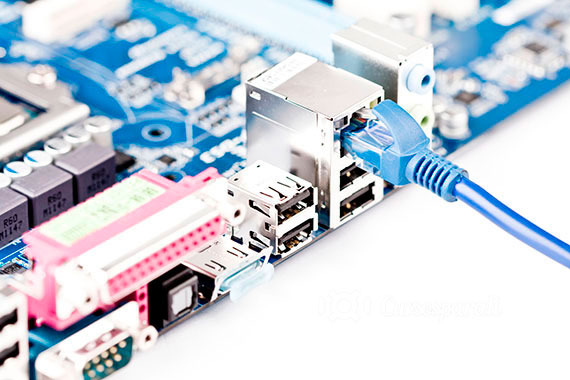

IES Son Ferrer - Ciclos de informática
En el IES Son Ferrer es posible estudiar el CFGM de Sistemas Microinformáticos y Redes, y el el CFGS de Desarrollo de Aplicaciones Web.
CFGM de Sistemas Microinformáticos y Redes
Este profesional ejerce su actividad principalmente en empresas del sector servicios que se dediquen a la comercializacion, montaje y reparacion de equipos, redes y servicios microinformaticos en general, como parte del soporte informatico de la organizacion o en entidades de cualquier tamaño y sector productivo que utilizan sistemas microinformaticos y redes de datos para su gestion.

CFGS de Desarrollo de Aplicaciones Web
Este ciclo formativo permite al titulado prepararse para poder desarrollar, implantar y mantener aplicaciones web, garantizando los criterios de calidad establecidos y la seguridad en el acceso a los datos.